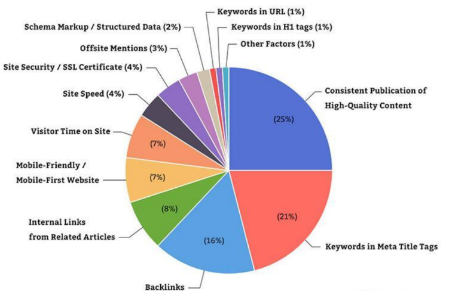

Usability - Design - Presence
for Websites and Web Applications
Andreas Dranidis
Usability
Usability
Usability is a “quality attribute” that assesses how easy user interfaces are to use. Five main components:
- Learnability
- how easy users can accomplish tasks the first time they encounter the design
- Efficiency
- how quickly users can perform tasks
- Memorability (retention)
- when users return, how easily do they re-establish proficiency
- Errors/safety
- how many errors users make, how severe, how easy to recover from errors
- Subjective satisfaction
- how pleasant the design is to use
Usability
- Usability is one of the most important quality factors and acceptance criteria for web applications
-
Unfortunately usability is analogous to human health:
- people notice it only when it is absent
- Poorly usable web applications lead to frustration and cause users to reject them. This is particularly true if there are alternatives.
- The objective is to design web applications so that users can achieve their goals effectively, efficiently and satisfactorily.
Factors Determining Usability
- Web apps have to be particularly intuitive for users
-
There are five major factors that can be used to determine the
usability of a web application:
- The Response Time (download time for a page)
- The Organization System of the website
- The Navigation System used throughout the site
- The Content of the website
- The Aesthetics of the website
UF1: Response Time - Loading Time
- All efforts in UX/UI design are wasted if website performance is poor.
-
If a website takes too long to load, users will leave. How long is
too long?
- 0.1 second is about the limit for having the user feel that the system is reacting instantaneously
- 1.0 second is about the limit for the user's flow of thought to stay uninterrupted
- 10 seconds is about the limit for keeping the user's attention
UF1: Response Time - Loading Time
-
Factors that affect the loading time of a web page
- Technical/Hardware related: available network bandwidth, connection speed, the location of the server and assets, the CPU/GPU/memory of the device etc.
-
Code and Design related:
- Poor coding standards - Formatting can be fixed with tools like: DirtyMarkUp, HTMLFormatter, HTML-Tidy
- Cumulative web page file size - large images, heavy use of CSS and JavaScript, plugins, complex queries
- Online tools like WebPageTest, PageSpeed Insights, or GTMetrix, or PingDom can help you determine the ‘performance of your website’
UF2: Organization System
- The way a website is organized can affect its usability
- Organization is important because a website is about information
- Organization refers to grouping of information
- Grouping:
- implies providing paths to information by showing relationships
- but the trouble with relationships is that they are subjective
- Exercise for you: organize the following information
- Refrigerator, Socks, Nightstand, Living Room, Dictionary, Kitchen, Milk, Bookshelf, Bedroom
Possible Groupings
UF2: Organization System
-
Determining how to organize your web site is no easy task.
- need to understand information architecture
- IA is not about the design, it is a matter of where content/links should be on a site - about the structure
-
An organization system refers to SCHEME and STRUCTURE:
-
Organization Scheme: how a site is subdivided into sections
(categorizing content based on the way you want each piece to
relate to the other). Two types:
- Exact Organization Schemes
- Subjective Organization Schemes
-
Organization Structure: the relationships between these
sections
- Linear, Hub, Web, etc.
-
Organization Scheme: how a site is subdivided into sections
(categorizing content based on the way you want each piece to
relate to the other). Two types:
Exact Organization Schemes
-
Divide content into sections that are mutually exclusive.
- information is categorized in specific categories that do not overlap.
-
Exact Organization Schemes Types:
- Alphabetical schemes: utilize the alphabet for the organization of content
- Chronological schemes: organize content by date
- Geographical schemes: organize content on place
-
Exact schemes may be difficult for users to navigate.
- users may not be familiar or may not understand how the information they are seeking fits into the organizational model
Subjective Organization Schemes
- Divide information into categories that defy exact definition. Can be difficult to design from the start since a subjective organization scheme needs to get into the mind of the user to organize the content.
-
Examples of Subjective Organization Schemes Types:
- Topic schemes: arrange content based upon the content’s subject matter. Successful when users look for a specific topic and know the keywords needed to get to that information.
- Task schemes: arrange content based upon the actions that users will consider when looking for content. Successful when the scheme accurately identifies these tasks.
- Metaphor schemes: organize content by connecting/relating it to familiar concepts and ideas. Used in desktop apps interface designs but not recommended for a primary website scheme.
- Audience schemes: arrange content based upon the type of audience to whom the content is directed. Challenges may arise if the type of audience is not identified easily.
Subjective Organization Schemes Examples

Designing Schemes
- Hybrid schemes are possible (not everything is black and white)
-
Categories generally should be mutually exclusive.
- However, sometimes it is sensible to cross-list an item in more than one branch of a scheme
- Remember however that too much cross-listing, then scheme loses its value

Organization Structure
-
The structure of information defines how different categories
defined by the scheme relate to one another.
- Structure defines way users navigate through information
- It is the plan or map of the pages in a site
-
Types of organizational structures:
- Linear
- Hub
- Hierarchical
- Web
Organization Structures

Designing Structures

UF3: Navigation System
-
When a user enters a web site:
- they usually try to find something, and
- they must decide whether to search or to browse
- Some users are “search-dominant”, others are “link-dominant”
-
About 50% of users will use search rather than the navigation
system.
- if the search facility is not very accurate, adding a ‘search’ may be counter-productive.
-
Every web site should provide both:
- A way to find information via a search facility
- A way to find information via clicking on a series of links, also called a Navigation System
The Navigation System
-
In any case, in any page in your site, users should be able to
tell:
- Where on the web am I?
- Where in the site am I?
- Where can I go?
- Where have I been?
Navigation System Guidelines
-
In addition to the previous, the navigation system has to be:
- simple and clear (reduce ambiguity, intuitive)
- consistent among website
- easily accessible (e.g. sticky on top)
- responsive (support small devices)
- Follow conventions ('Home'-'About'-'Contact', search box should be available on every page, footer with global navigation as hypertext, include sitemap, etc.)
- Follow the 3-clicks rule (as much as possible - no more than three clicks to find something, no more than seven categories.)
UF4: Content
-
For most users, this is the page they are looking for.
- e.g., single article, product, story, blog entry, etc.
- The focus of this page should be the content, not advertising, navigation, etc.
-
Nothing is more important than the content of the site. Content
should be:
- Informative, Accurate, Timely, Readable
- Do not design your site without the content.
-
Remember that users DO NOT READ on the web. They scan!
- Reading from computer screens is tiring and about 25% slower than reading from paper
Content Guideline
-
Make the content scannable
- Highlighted keywords, meaningful sub-headings, bulleted lists, anything to help the user filter what s/he is looking for
- One idea per paragraph
- Inverted pyramid style of writing (conclusion first)
- Half the word count of conventional writing
Web Design Guidelines
-
Simplicity of the design
- Do not add unnecessary design elements (KISS rule)
-
Consistency of the design
- Examples: navigation, layout, same color scheme, consistent graphics, same font, etc.
-
Familiarity of the design
- Don’t reinvent patterns - use existing ones
-
These three guidelines should be applied to all usability
components:
- Organization System, Navigation System, Content, Aesthetics
-
You should be clear of what your goals are.
- Define target audience, objectives and purpose of website, content
Web Design
Separate Top Sections
- The top section says "Here’s the top of the page". Sounds obvious, but it feels good to know clearly where the page starts
- On any site, both the main branding and main navigation should be obvious, bold and clear.

Bold Text Introductions
- Many sites lead with strong all-text headline descriptions.
- These normally set out the site's USP or main message.
- They tend to be graphical, rather than regular text.

Bold Logos
- A clear, bold, strong brand - incorporating attitude, tone of voice, and first impression - is helped by a bold logo.
-
logo should:
- be recognizable and distinctive
- represent your brand's personality and qualities on first viewing

Muted Color Palettes
- In past few years, bright, strong colors were used to draw the eye.
- However, designers and brands take a step back from those vivid colors towards more muted color palettes
- Muted colors have been slightly desaturated with black, white or a complementary color. They are basically the opposite of vivid colors.
Muted Colors Examples
Gradients
-
They are commonly used at the very top of page backgrounds, where
they help denote the boundary of the viewable area. In general,
gradients can:
- soften areas that would otherwise be flat color/tone.
- can create the illusion of a non-flat surface.
- be used to fade a color into a lighter or darker tone, which can help create mood.

Gradient Examples with Muted Colors
Contrast is Important
-
Tonal contrast is a fundamental design element:
- It differentiates elements
- It brings out dominant elements and mutes lesser elements
- It creates dynamism
-
Contrast attracts your eye
- Contrast makes things stand out from their surroundings, so things with higher contrast will be more noticeable
-
Common problems in web design:
- Not enough contrast
- Highest-contrasting elements aren’t the right ones
Contrast Example
Another Contrast Example
Grouping and Proximity of Elements
- Proximity and grouping of components is very important

Simple but Heavy Fonts
-
In contrast with a few years ago, text is getting bolder, with
heavily weighted fonts: large typography!
- Designers use it to create contrast and hierarchy in the design by pairing them with a simple background or a lighter font.
Heavy Fonts Examples
Soft Shadows, Layers, Floating Elements
- Create a pseudo-3D effect and make the design more layered and more interesting.
Soft Shadows, Layers, Floating Elements
- Choice of colors in a web site is very important
-
Forgiveness is important as everyone can make mistakes. So can
your users.
- Designers and developers often forget to forgive (e.g. undo action)
- Make everything a user may need easily accessible.
-
Preventing your user from doing something wrong is better than
- Correcting them
- Frustrating them from not being able to complete an action
-
Give feedback when an action is performed
- e.g. ‘loading’ animation or icon
{kind=link}
Web Presence
You Created the Perfect Web App
- You have created a valuable and useful web application or website
- You have paid extra attention to UX and UI design and your web application or website is intuitive, beautiful, efficient and fast.
If no one can find it or it is hard to find, it will go to waste.
Market Share of Search Engines
Understanding the Google Search Engine
-
What has to happen for you get results from a web search?
- Crawling the Web (60 trillion individual pages)
- Indexing (over 100 million gigabytes)
- Fighting spam
- Returning the ranked results (using over 200 factors)
-
How does Google decide which results to show you?
-
By asking questions. Over 200 of them. For example:
- How many times does this page contain your keywords?
- Do the words appear in the title? In the URL (web address)?
- Is this page from a quality website? Or is it low quality, even spammy?
- Google PageRank algorithm takes under consideration over 200 factors.
-
By asking questions. Over 200 of them. For example:
Search Engine Results Pages (SERP)
SEO vs PPC
-
Search Engine Optimization (SEO)
- SEO is the process of improving the volume and quality of traffic to a web site from search engines via unpaid or "organic" search results.
-
Pay Per Click (PPC)
- PPC is an Internet advertising model used to direct traffic to websites, where advertisers pay the publisher when the ad is clicked.
White Hat vs. Black Hat SEO
-
White Hat SEO techniques
- tactics that work within search engines’ terms of service to improve a site’s search engine results page (SERP) rankings.
- the ethical way
-
Black Hat SEO techniques
- tactics that may get a site higher SERP rankings, but are violate search engine guidelines
- the unethical way
- Understanding what’s what when it comes to SEO best practices is essential to maintain the integrity of your website, online rankings, and visibility.
On-Page White Hat SEO
-
Domain name
- Keywords in domain name, Age, Registration duration etc.
-
Title tag
- Unique titles with keywords that are relevant to each page
- Maximum length of the title is 60-70 characters
- Meta description tags
-
Use of Headings (H1, H2 ... tags)
- H1 tag should contain the central keyword of the web page
On-Page White Hat SEO
-
Navigation
-
Website should Easy to navigate
- Breadcrumbs (path)
- HTML Sitemap page (helps humans navigate a website easily)
- Follow the 3-click rule
- Anchor text relevant to the page you are linking to
-
Website should Easy to navigate
-
XML Sitemap file
- helps search engines to easily understand your website structure while crawling (web crawlers use it)
- Online Tools can help
On-Page White Hat SEO
-
ALT attribute in all images of the website (mandatory for
accessibility)
- Writing an ALT text for an image is challenging. There exist techniques and guidelines.
- What ALT text would you put on an image BUTTON that reads “Register”?
- Let's practice
-
Website speed and loading time - You want pages to load as quickly
as possible
-
Page Speed isn’t straightforward because there are lots of
different ways of measuring it
- Fully Loaded Page
- Time to First Byte
- First Meaningful Paint
- Optimize the code and website components
- Remember, online tools exist: WebPageTest , PageSpeed Insights , GTMetrix , PingDom
-
Page Speed isn’t straightforward because there are lots of
different ways of measuring it
On-Page White Hat SEO
-
Internal Links
- A link from one page to another page on the same domain
- Links in the content, on the pages - (not navigation)
-
Google looks at how much supporting content a particular page
has that relates to the keyword that page is targeting
- Example: publishing 100 articles on different aspects of a subject, then linking them all back to one pillar page is a powerful expression of that page’s authority
-
Mobile Accessibility
- The standard used to be mobile friendly, but Google is shifting to a mobile-first.
- Use tools: Google’s Mobile-Friendly Test
- Visitor Time on Site
On-Page White Hat SEO
- A backlink is when one website mentions another website by linking to it.
-
One of the most powerful white hat SEO techniques
- can drive an immense amount of traffic to your website
- boost your website's credibility and authority
- Quality of backlinks is more important than quantity.
-
There exist several backlink building methods.
- Note: you shouldn’t buy backlinks to improve your Google ranking. ‘Link buying’ is a black hat SEO technique and can get you penalized by Google
On-Page White Hat SEO
-
You have very little chance of ranking high in SERP if you don’t
include the keywords you wish to rank for in:
- your title tag (most important)
- your URL and H1 tags
- your content
-
Finding the right, content-relevant keyword(s) is time-intensive
and unintuitive
- Use Tools: Free Keyword Tool, TwinWord , Google Keyword Planner, Ubersuggest, etc.
- Identify a user’s search intent is through Google
- How many? Use one primary keyword and 2 or 3 secondary keywords.
-
Be careful not to Keyword Stuff
- It’s a Black Hat technique and a big no-no.
On-Page White Hat SEO
- Content is the #1 ranking factor for search engines
-
Create content that is:
- fresh
- valuable
- unique
- Create content for your users, not search engines
- Write easy-to-read text
- Stay organized around the topic
Top Google Algorithm Ranking Factors - 2020

On-Page Black Hat SEO
- Example Black Hat SEO tactics to avoid:
- Hidden Content: hidden content masked with code but stuffed with keywords only visible to crawlers.
- Keyword Stuffing: overusing the same keywords throughout one page in order to maximize its visibility and organic traffic.
- Cloaking: a technique to trick users as well as crawlers by misleading the search engine robots into thinking the content on the page is different than it really is.
- Duplicate Content: Copying content from other sites and posting it on yours as the ‘original’ is plagiarism and Google identifies it quickly.
- Google Bombing: influencing the rank of a page by artificially increasing the number of linking to it and the anchor texts used for that.